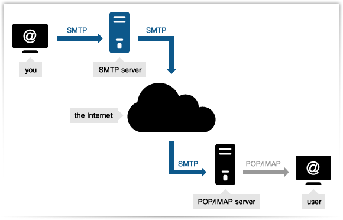

CAPA DE APLICACIÓN
1. Proporciona la interfaz entre las aplicaciones que utilizamos para comunicarnos y la red subyacente en la cual se transmiten los mensajes.
2. Los protocolos de capa de aplicación se utilizan para intercambiar los datos entre los programas que se ejecutan en los hosts de origen y destino.
Vamos a hablar de todos los protocolos de esta capa y los más utilizados, al final hemos implementado un caso práctico sobre como configurar el fichero host en Windows..
1Introducción al temario
Principalmente profundizaremos en dos protocolos muy importantes, el DHCP y el DNS ya que son protocolos en los que se puede aplicar la práctica y no están tan obsoletos como pueden ser Telnet o SSH
Una vez explicados estos dos, haremos una breve descripción de todos los demás.
2DHCP (Dynamic Host Configuration Protocol)
3DNS (Domain Name System)
Telnet es un protocolo que permite acceder de forma remota a un ordenador como si estuviesemos trabajando directamente sobre él.
Aquí tenemos como acceder remotamente mediante telnet
Mediante el siguiente comando que se muestra en la pantalla descargaremos telnet, ya que en windows 10 de serie viene desactivado. El problema es
que ya está en desuso por su poca seguridad, pero para hacer cosas desde el router de casa de conexión ADSL aun es util.

Una vez instalado el paquete, ponemos el comando "telnet" y comprobamos que funciona:

SHH (Secure shell) es otro protocolo que hace lo mismo que telnet con la diferencia que introduce la gran mejora de que todo el intercambio de datos entre
los dos ordenadores sea cifrado. Y al igual que Telnet lo hace por consola.
Todos los datos que se envian se tranfieren a 128 bits, entonces son muy dificiles de descrifrar y leer.
Accediendo remotamente mediante un cliente SSH
Hay unos programas especiales que envian información cifrada entre las maquinas conectadas, un programa muy utilizado en esto es
PuTTY.

FTP es un protocolo cliente-servidor que implementa el modo en el que se transfieren los archivos entre maquinas remotas.
Este protocolo funciona de la siguente manera. Los clientes FTP que solicitan la conexion, deben proporcionar su nombre de usuario y contraseña,
entonces el servidor FTP les proporcionará acceso a unas carpetas con permisos determinados cada una de ellas.
Este protocolo utiliza dos conexiones TCP pararelas:
- Conexión de control: utiliza el puerto 21.
- Conexión de datos: utiliza el puerto 20.
Tambien FTP utiliza dos tipos de envío de ficheros:
- ASCCI: para enviar ficheros con caracteres imprimibles.
- Binario: para enviar archivos ejecutables, imagenes, y cualquier cosa que no contenga texto plano

Video realizado por Sergio Fernández
Los siguientes protocolos de los que vamos a hablar se utilizan en el correo electronico, la primera apliacion que se utilizó para comprobar el
funcionamiento de la red que mas tarde se convertiría en internet. Para ello se definieron 3 protocolos importantes para el funcionamiento del correo
electronico:
SMTP (Simple mail transfer protocol)
Este protocolo que implementa cómo debe ser la transferencia de un mensaje de correo electrónico entre un remitente y un destinatario. SMPT no
necesita servidores intermedios, es decir, los servidores de correo electrónico establecen una conexión directa entre sí y envñian los mensajes programados.
POP3 (Post Office Protocol)
POP3 es el protocolo que implementa la funcionalidad de recibir los mensajes del servidor de correo electronico implementado en la red. Las
apliaciones que utilizan POP3 eliminan los mensajes del servidor de correo cuando los recuperan para el ordenador local.
IMAP (Internet Message Access Protocol)
IMAP es el protocolo que permite acceder a los mensajes de correo electrónico alojados en un servidor a través de internet. Actualmente
IMAP se ha convertido en el mejor protocolo para consultar el correo a través de un navegador web. Las ventajas son claras:
- No necesitas apliaciones para ver el correo.
- Los mensajes no ocupan espacio en el disco duro
- Los mensajes no se borran del servidor de correo hasta que lo determine el usuario.

Ahora vamos a hacer un caso practico de un fichero host en windows, es muy util si se quiere asignar nombres a dispositivos en una red local para no tener que acceder mediante su direccion IP.
1Caso práctico del fichero "host"
En los sistemas Windows y Linux existe un fichero que realiza las funciones del DNS local. Este es extremadamente útil si se quiere asignar nombres a los dispositivos de una red local para no tener
que acceder a ellos mediante su dirección IP, en este video se explica como se configura:
Video realizado por Sergio Encinas